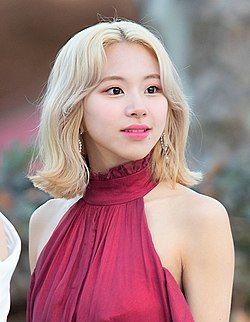

|  | |
| English Name | Son Chaeyoung |
|---|---|
| Korean Name | 손채영 |
| Birthday | April 23, 1999 (age 22) |
| Nationality | South-Korea |
| Occupations | Rapper,Singer,Dancer |
| Genres | K-pop,J-pop,Hip-Hop |
| Instruments | Vocals |
| Years Active | 2015-present |
| Labels | JYP.Warner JapanRepublic |
| Associated Acts | Twice. JYP nations |
Chaeyoung was born in Seoul, South Korea on April 23, 1999.[1][2][3] Chaeyoung took interest in performing arts from a young age and started off as a model for a children's magazine.[1] Before joining JYP Entertainment she had decided she wanted to become a singer and took dance lessons for over a year.
Main articles: Sixteen (TV series) and Twice
Chaeyoung was 14 years old when she first auditioned to join JYP Entertainment as a trainee and joined after passing two rounds of auditions.[1] She started off as a singer but started to train as a rapper shortly after commencing her training.[1] Before debuting with Twice, she appeared in music videos by Got7 and Miss A.
Chaeyoung participated in the reality television competition Sixteen in 2015.[6][7] As one of nine successful participants, she went on to join the newly formed girl group Twice.[6] On October 20, 2015, Twice officially debuted with the release of their first extended play The Story Begins.[8] In addition to her singing for the group, Chaeyoung is known for being one of Twice's rappers, along with fellow group members Dahyun and Momo.[1][4][5][6] Chaeyoung became the first member to receive writing credits when she wrote the rap verse for Twice's version of J. Y. Park's Precious Love, as part of their 2016 release Page Two.[9] Ever since then, Chaeyoung has contributed to the lyrics of multiple songs for Twice. Chaeyoung also covered "Alone" by Cheeze as a solo project.[1] In Twice's second Japanese studio album &Twice, Chaeyoung took part in composing the track "How U Doin'" alongside Frants, making her the first member to do so.[10] She also designed the group's limited edition Page Two album cover[11] and also designed three different pairs of SPRIS shoes.
Chaeyoung attended Hanlim Multi Art School with fellow Twice member Tzuyu, and graduated in 2019.[12][13] In 2020, Chaeyoung's personal phone number was leaked on social media; JYP Entertainment released a statement about the incident, and Chaeyoung responded directly on Twice's Instagram page.
Main article: Twice discography
| Year | Title | Network | Row | Ref |
|---|---|---|---|---|
| 2015 | Sixteen | Mnet | Contestent | 7 |
| Year | Title | Network | Notes | Ref |
|---|---|---|---|---|
| 2016 | Suwon K-pop Super Concert | SBS MTV | With Kim Hee-chul, Zhou Mi and Momo | 20 |